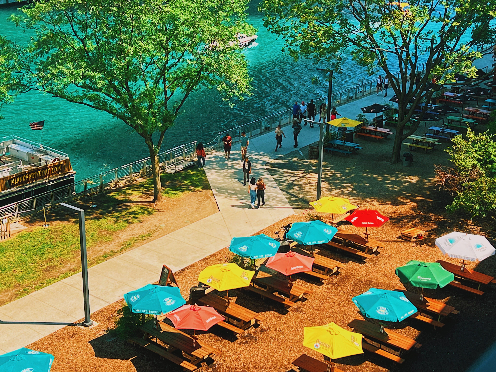
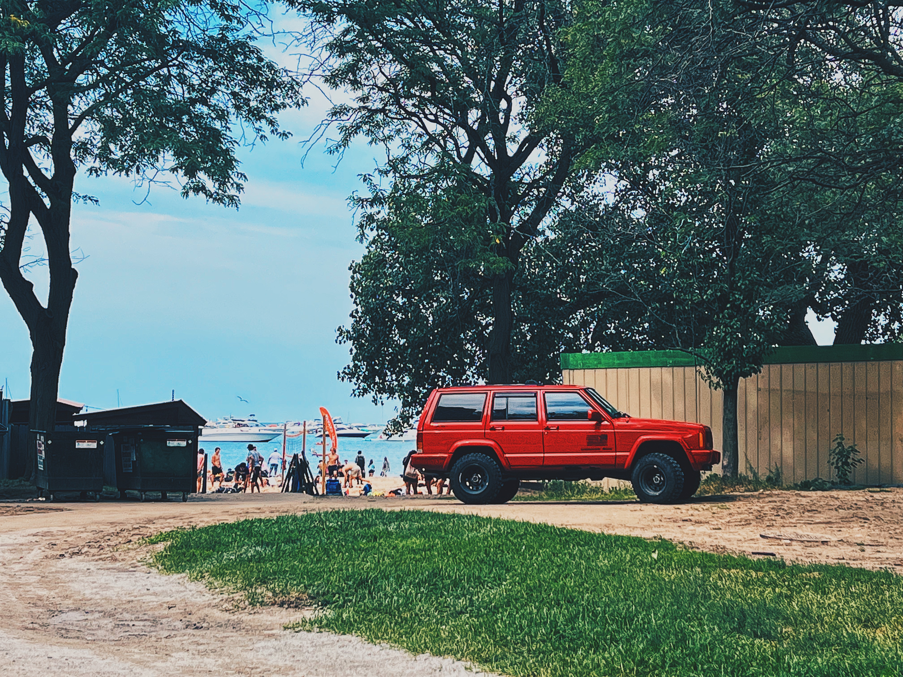
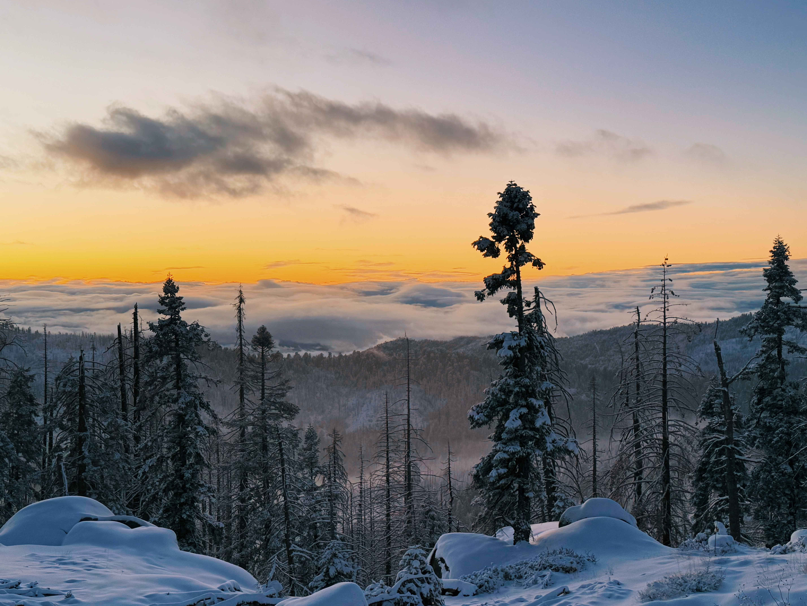

Los Angeles - Exploring New Horizons
A short but vibrant chapter, full of new discoveries and passions.
I spent a few memorable months living in Los Angeles, soaking in the city's energy, diversity, and endless spirit of creativity. It was here that I embraced the joy of exploring new things — visiting iconic places, trying new experiences, and pushing beyond my comfort zone.
Travel became a way of life during this time. Los Angeles was not just a place to stay — it was a gateway. I traveled extensively across the U.S., experiencing the stunning range of landscapes, cultures, and histories that this country holds.
Cooking remained one of my greatest passions during my time in LA. I experimented with new recipes, flavors, and styles, often drawing inspiration from the city's amazing international food scene. Food became a form of creativity, connection, and joy in my everyday life.
Photography also became deeply personal to me. Whether it was capturing sunsets over the Pacific Ocean, urban street life, or breathtaking desert horizons, my camera became a constant companion in my journey of discovery.
Even though my time in Los Angeles was relatively short, it left a lasting mark. It reminded me that growth often happens when you embrace the unknown with an open heart — and that some of life's most beautiful memories come from exploration, creativity, and passion.
